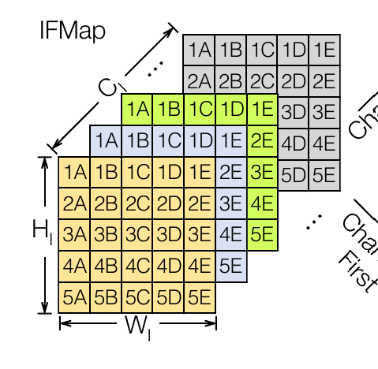
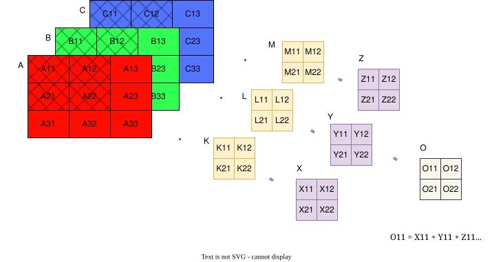
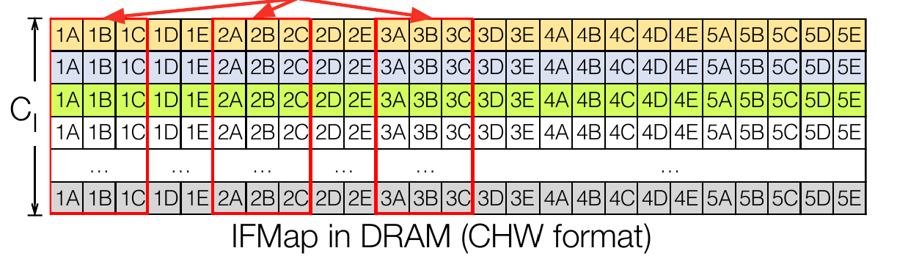
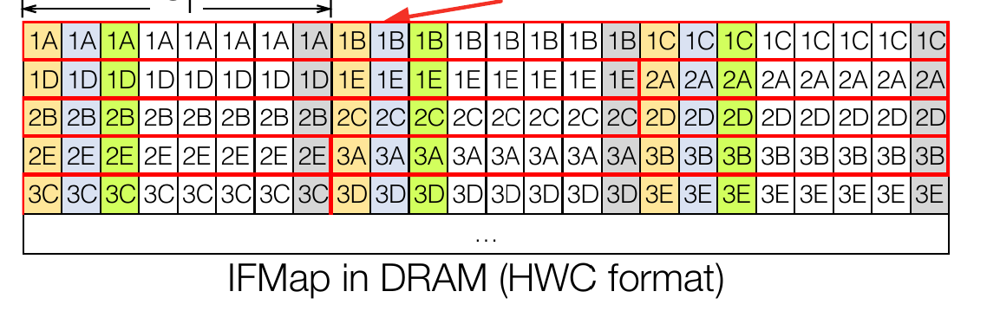

Introduction¶
Pre-requisites¶
It is recommended to familiarize yourself with the basics of machine learning and FPGAs before understnding how it’s being accelerated.
Here are some resources to get started:
Optional (recommended reading):
Note
You can recommend more quality resources by creating an issue here: https://github.com/vicharak-in/Gati/issues
Common Definitions¶
- DNN¶
Deep Neural Network
- Ifmap¶
Input feature map. Inputs to a layer of DNN. Following is a Ifmap of C channels, H height and W width.

- Ofmap¶
Output feature map. Output of a layer of a DNN.
- Kernel¶
Kernels are N-dimensional tensors that are slid across an Ifmap where the dot-product of the Kernel and Ifmap produce Ofmap.
- Hout and Wout¶
Ofmap height and Ofmap Width. This is the formula to calculate Hout, Wout from Input Width (IW), Kernel Width (KW), Stride (S), Padding (P).:
OH = (IH - KH + 2*P)/S + 1 OW = (OW - KW + 2*P)/S + 1
- Convolution¶
Convolution is a process of sliding a Kernel across an Ifmap to produce a Ofmap.
Following is the convolution process b/w kernels K, L, M and Ifmaps A,B,C to produce intermidiate outputs X,Y,Z of same size which are then added together:

- Row Major Order (NCHW)¶
Row-major ordering is a linear memory storage approach where elements of a multidimensional array are stored in consecutive memory locations row by row. In this arrangement, the first row’s elements are stored contiguously, followed by the second row, and so on. For example, in 224x224x3 (image with three channels), all rows of channel 1 are followed by rows of channels 2 and so on. Consider a three channel image as shown in the following figure (From [ZYG+21]):
Row major ordering for the Ifmap image would look something like this:

Following is the pattern:
(e1,1-c1),(e1,2-c1),…(e1,224-c1),…(e224,224-c1), (e1,1-c2),(e1,2-c2),…(e1,224-c2),…(e224,224-c2), (e1,1-c3),(e1,2-c3),…(e1,224-c3),…(e224,224-c3)
- Channel First Layout (NHWC)¶
Channel-first layout, often referred to as “NHWC” (Number of images, Height, Width, Channels), is a data arrangement format commonly used in deep learning frameworks, particularly for convolution neural networks (CNNs). In this layout, the channels (e.g., color channels in an image) are the innermost dimension, followed by width and height. For example, 224x224x3 (image with three channels), element1 of all channels are next to each other, till last element of row of all channels. Likewise for all rows.
Channel first for the image from the above section is arranged as shown in the following figure:

Following is the pattern:
(e1,1-c1), (e1,1-c2), (e1,1-c3), … (e1,224-c1), (e1,224-c2), (e1,224-c3), (e2,1-c1), (e2,1-c2), (e2,1-c3), ………(e224,224-c1), (e224,224-c2), (e224,224-c3).
- Systolic Array¶
A systolic array is a parallel computing architecture that organizes processing units in a regular grid, resembling a matrix. Data flows through the array in a systolic fashion, where computations are performed in a pipeline manner. This design enhances throughput and efficiency, commonly applied in tasks like matrix multiplication and signal processing in parallel computing systems. Here’s an animation showing how Systolic arrays work.
- Partial Sums¶
A partial sum refers to the accumulated total of a subset of a series or sequence. It represents the sum of a specific range or portion of elements within a larger set.
- Dataflow¶
Dataflow is how, where and what type of data is passed through a systloic array (in our case).
- Weight Stationary¶
Is a type of dataflow where weights (Kernel) are kept inside a PE and Ifmaps are passed through the systolic array.
- Output Stationary¶
Output Stationary dataflow and weight-stationary dataflow are related but distinct concepts. In systolic dataflow, processing units arranged in a grid perform computations in a pipeline manner. Data is “pumped” through the array bidirectionally (top-to-down and left-to-right), and each processing unit processes a portion of the data as it passes through. In case of weight stationary, weights are pre-loaded to the systolic array first and during operation, data is only “pumped” left-to-right. In both cases, partial sums are moved vertically down and final sum is available at the lower most processing unit. In other words, in weight stationary, inputs are shared, while in systolic dataflow, both inputs and weights are shared. Chapter 5 of [SCYE20] contains in-depth explanations of different dataflows.
- Quantization¶
Quantization is the process of representing numbers of some higher bit-width in lower bit-width with obvious loss in precision.
- INT8 quantization¶
Integer 8 (INT8) quantization is a data compression technique that represents numerical values using 8-bit integers. This reduces the precision of the original data but significantly decreases storage requirements and computational complexity.
- Clipping¶
If the output surpasses this limit, the function replaces it with the predefined maximum value.
- Image Classification¶
Image classification is the problem of predicting class of an image. For eg, a classification for an image containing a Dog is “Dog”.
- Imagenet¶
Imagenet is a dataset of images commonly used for image classification tasks.
- ILSVRC¶
- ONNX¶
ONNX is a file format used to represent DNN graphs.
- MIPI¶
MIPI is the protocol via which the CPU and FPGA on Vaaman communicate.
- Trion120¶
Is the FPGA used in Vaaman. Trion120
- RK3399¶
Is the CPU used in Vaaman. RK3399
- BatchNorm¶
Batch normalization (also known as batch norm) is a method used to make training of artificial neural networks faster and more stable through normalization of the layers’ inputs by re-centering and re-scaling
- Relu¶
A rectified linear unit (ReLU) is an activation function that introduces the property of nonlinearity to a deep learning model and solves the vanishing gradients issue.
- Pooling¶
Pooling layers provide an approach to down sampling feature maps by summarizing the presence of features in patches of the feature map.
{kind=link}
{kind=link}
{kind=link}
{kind=link}